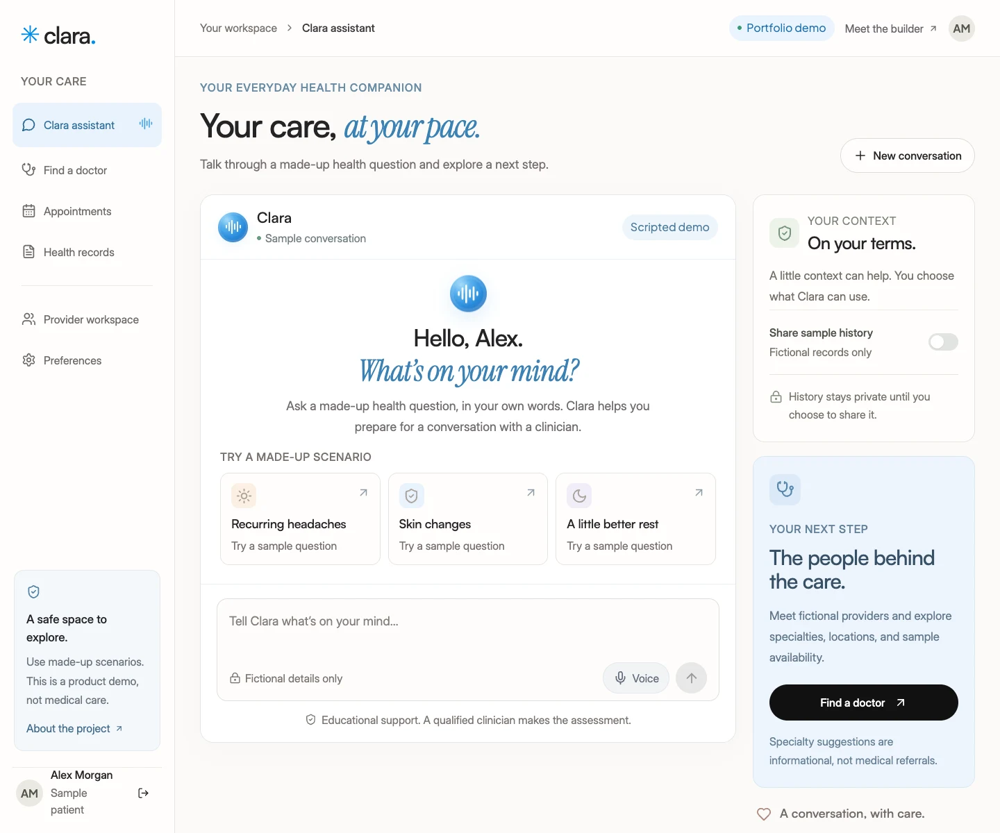

Challenge
A healthcare assistant needs more than a chat screen. The experience must connect questions to the right human conversation, handle patient context with permission, and give providers a useful way to review information. The challenge was to make those workflows tangible in a client-ready demo while keeping its limitations clear.
What I built
- A responsive product website with locally hosted reference fonts, larger typography, animated section reveals, a patient workspace, and a provider workspace.
- A redesigned assistant with a welcoming start screen, animated voice orb, sample prompts, readable conversation bubbles, response copying, and contextual provider previews.
- Contextual sample conversations, follow-up questions, informational specialty suggestions, and optional fictional history sharing.
- Browser voice input with a disclosure, visible recording state, and editable transcript review before sending, plus spoken responses on supported browsers.
- Doctor search, specialty and location filters, consultation types, fee sorting, sample booking, cancellation, and duplicate-slot prevention on the same device.
- A simulated appointment queue, sample health-record viewing and downloads, and local document metadata management.
- An editable, template-assisted consultation draft with review status and export. Edits revoke the draft’s reviewed state.
- A server-side DeepSeek integration prepared for a later phase, with request validation, emergency phrase checks, cost-control requirements, and labeled fallback responses.
Clear boundaries are part of the product.
Clara does not diagnose or prescribe. Conservative emergency phrase rules interrupt ordinary assistant suggestions, and the conversation retains that state until reset. Sharing sample history is optional. The public assistant uses scripted responses; live DeepSeek is disabled.
There are no real patient accounts, authenticated provider roles, medical document uploads, clinic appointments, or compliance claims. Sample bookings stay in the browser; conversation context and drafts stay in memory. The provider workspace demonstrates a review workflow rather than clinical decision-making.
A visual direction with a human tone.
The supplied Framer reference informed the warm whites, bright blue highlights, black pill buttons, serif accents, editorial spacing, and dark provider section. Satoshi headings and Inter Display body text match its typography, with locally served fonts and a 16px minimum for landing-page and assistant text. The assistant uses an auto-sizing input, distinct user and sample-response bubbles, and a responsive context panel. A sticky desktop preview changes as you scroll through the patient journey; phone users can tap through the same stages. Smooth navigation, section reveals, an animated voice preview, and a swipeable card gallery support the experience, with reduced-motion preferences respected throughout. The product language and interactive workflows were created for Clara, with a direct path for prospective clients to contact me.
Validation
The safety and API tests cover emergency phrases, explicit denials, persistent escalation, history consent, request validation, and quota enforcement. Browser checks exercise the patient journey, booking persistence and collisions, cancellation, queue simulation, record downloads, editable drafts, reset, navigation, and desktop, tablet, and mobile layouts. Landing checks cover font loading, text sizes, scroll behavior, preview transitions, FAQs, mobile controls, direct section links, reduced motion, and layouts from 320px to 1440px. Assistant checks cover reference fonts, readable labels, keyboard sending, complete response copying, contextual recommendations, transcript review, reset during pending responses or speech, and mobile navigation focus.
Automated voice checks simulate speech recognition to verify disclosure, editable transcripts, and late callback handling. Real microphone capture and speech quality still require testing on supported devices and browsers. These product checks do not constitute clinical validation.
Where the prototype leads.
A production engagement would separately scope native mobile clients, secure authentication, enforced roles, transactional scheduling, encrypted record storage, audit trails, clinician-reviewed knowledge sources, voice infrastructure, notifications, and privacy requirements. Clara gives a client a concrete way to discuss that scope.